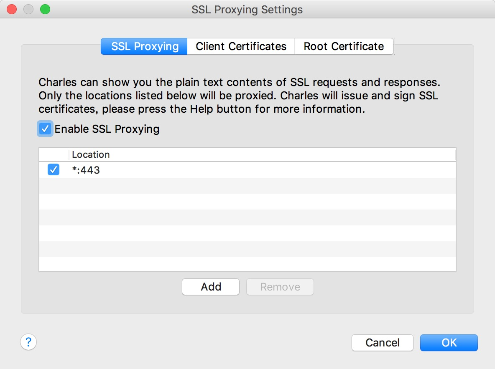

18. App的信息爬取
- 之前我们讲解的都是Web网页信息爬取，随着移动互联的发展，越来越多的企业并没有提供Web网页端的服务，而是直接开发App。
- App的爬取相比Web端爬取更加容易，反爬中能力没有那么强，而且响应数据大多都是JSON形式，解析更加简单。
在APP端若想查看和分析内容那就需要借助抓包软件，常用的有：Filddler、Charles、mitmproxy、Appium等。
mitmproxy是一个支持HTTP/HTTPS协议的抓包程序，类似Fiddler、Charles的功能，只不过世它通过控制台的形式操作。
Appium是移动端的自动化测试工具，类似于前面所说的Selenium、利用它可以驱动Android、IOS等设备完成自动化测试。
18.1 Charles的介绍
- Charles是一个网络抓包工具，可以完成App的抓包分析，能够得到App运行过程中发生的所有网络请求和响应内容。
- 相关连接：
Charles主要功能:
* 支持SSL代理。可以截取分析SSL的请求。
* 支持流量控制。可以模拟慢速网络以及等待时间（latency）较长的请求。
* 支持AJAX调试。可以自动将json或xml数据格式化，方便查看。
* 支持AMF调试。可以将Flash Remoting 或 Flex Remoting信息格式化，方便查看。
* 支持重发网络请求，方便后端调试。
* 支持修改网络请求参数。
* 支持网络请求的截获并动态修改。
* 检查HTML，CSS和RSS内容是否符合W3C标准。
18.2 Charles的配置
① 网络共享配置：
- 实现手机通过电脑上网：就是电脑通过网线上网，然后共享Wifi，手机在链接此wifi。
- 查看本机电脑的网络链接：
- 共享wifi设置：
- 手机链接此wifi，实现手机和电脑连接到同一个局域下
② 代理设置：
实现手机和电脑在同一局域网下的机上，完成Charles的代理设置：
首先查看电脑的打开Charles代理是否开启，具体操作是：
Proxy->Proxy Settings,打开代理设置界面，设置代理端口为：8888.打开手机的网络配置，并设置使用代理配置：
③ 证书配置：
安装完成后，我们还需要配置相关SSL证书 来抓取HTTPS协议的信息包。
Windows系统：
- 首先打开Charles，点击
Help->SSL Proxying->Install Charles Root Certificate,即可进入证书安装界面。 - 点击 “安装证书” 按钮，就会打开证书导入向导。
- 点击 “下一步” 按钮，此时需要选择证书存储区域“将所有证书放入下列存储”->点击"浏览"->选择“受信任的证书颁发机构”->"确定"->"下一步"->完成。
- 首先打开Charles，点击
Mac系统：
- 首先打开Charles，点击
Help->SSL Proxying->Install Charles Root Certificate,即可进入证书安装界面。 - 接下来，找到Charles的证书并双击，将 “信任” 设置为 “始终信任”即可 。
- 首先打开Charles，点击
IOS手机：- 在网络配置和代理开启的情况下，若是你的手机是IOS系统，可以按照下面的操作进行证书配置。
在手机浏览器上打开chls.pro/ssl后，便会打开证书安装页面，点击安装即可。
在IOS手机上，点击“设置”->"通用"->"关于本机"->"证书信任设置"，设置开启即可。
⑤ Charles 配置 HTTPS 代理的乱码问题
在 Charles 设置 SSL 代理：
Proxy –> SSL Proxying Setting –> Enable SSL Proxying


18.3 Charles的运行原理和具体使用
① 运行原理：
首先Charles运行在自己的PC上，Charles运行的时候会在PC的8888端口开启一个代理服务，这就是一个HTTP/HTTPS的代理。
确保手机和PC在同一个局域网内，我们可以使用手机模拟器通过虚拟网络连接，也可使用手机真机和PC通过无线网连接。
设置手机代理为Charles的代理地址，这样手机访问互联网的数据包就会流经Charles，Charles再转发这些数据包到真实的服务器，同理相反也是如此。
② 具体使用
- 手机运行App访问要爬取的平台信息，使用Charles抓包分析。
- 知道了请求和响应的具体信息，通过分析得到请求的URL地址和参数的规律，直接使用程序模拟即可批量爬取。